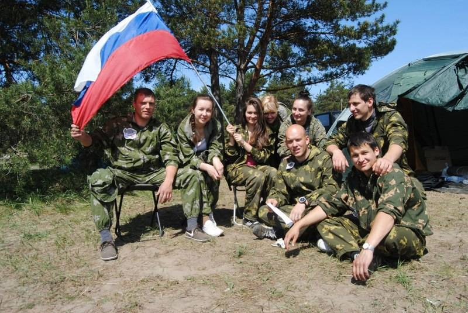
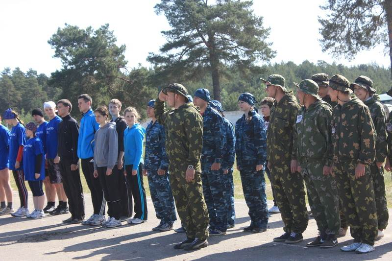
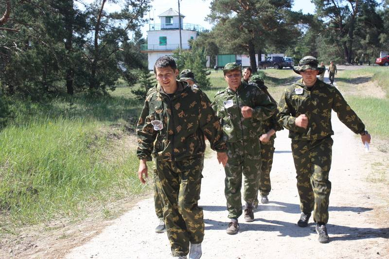
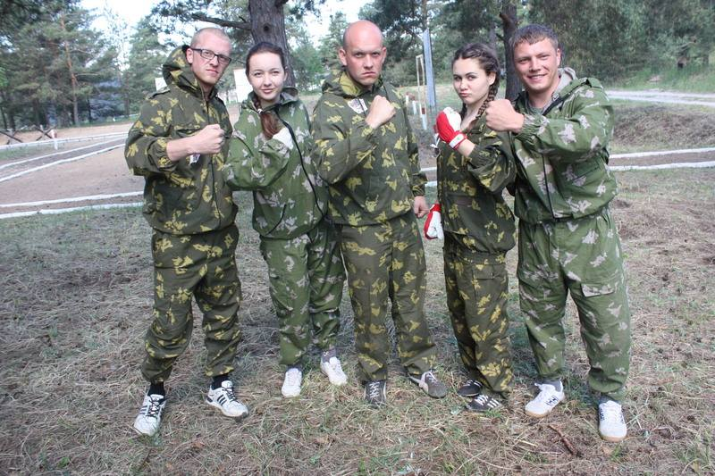

Архив новостей
Впервые и уже с наградами
Два майских дня, 26 и 27, были отданы областным военно-спортивным играм среди студентов и работающей молодёжи. Игры проходили в Козельске и в них приняло участие 13 команд, в большинстве (10 команд) – представители трудовых коллективов Калужской области.
Наша команда под названием «Беркут» защищала честь района во главе с капитаном Андреем Соцевичем, сотрудником МО МВД РФ «Тарусский». Члены команды: Денис Зуев, Кирилл Матвеев, Татьяна Батуева, Антонина Машкова.
В эти два дня шли упорные спортивные соревнования: военно-спортивная эстафета (преодоление полосы препятствий в костюме химзащиты, стрельба из винтовки, метание гранаты и т.п.); «Готов к труду и обороне России»; соревнования по медицинской подготовке, по гражданской обороне и чрезвычайным ситуациям «Школа безопасности»; автомобильный конкурс; соревнования по стрельбе «Снайпер». В игру также была включена и интеллектуальная составляющая - викторина под названием «100 вопросов – 100 ответов», в ходе которой участники показывали свои знания военной истории СССР и Российской Федерации.
Несмотря на то, что тарусяне впервые участвовали в подобного вида областных военно-спортивных играх, они сумели заявить о себе и отличились в отдельных видах соревнований.
Главный успех – первое место среди 13 команд-участниц соревнований по стрельбе «Снайпер». Четыре участника из положения лёжа сделали пять выстрелов из автомата Калашникова с расстояния 50 метров и добились наилучших результатов, а Кирилл Матвеев стал бронзовым призёром в личном первенстве. Внимание к стрелковому спорту в нашем районе бесспорно отражается и на результатах. Первое место - это гордость и заслуженная награда.
Успешно выступила наша команда и в автомобильном конкурсе. Задание было не из лёгких – в зачёт времени заменить заднее колесо у грузового автомобиля и проехать извилистый участок дороги. Команда заняла второе призовое место.
Такие мероприятия, как областная спортивная игра «Стратегия-Поиск 2012», очень запоминаются. Во-первых, представители спортивной молодёжи региона и областного центра набираются опыта, видя сильнейшие стороны своих соперников, учатся в общении с ними. Среди 13 команд, Тарусская команда «Беркут» заняла шестое место. Члены нашей команды оценили свои результаты объективно, определили свои слабые стороны, над которыми следует поработать. Впереди новые старты, будем к ним готовиться.
Информация предоставлена редакцией районной газеты "Октябрь"
Автор статьи - Л. Иванова
Фото предоставлены администрацией МР "Тарусский район"